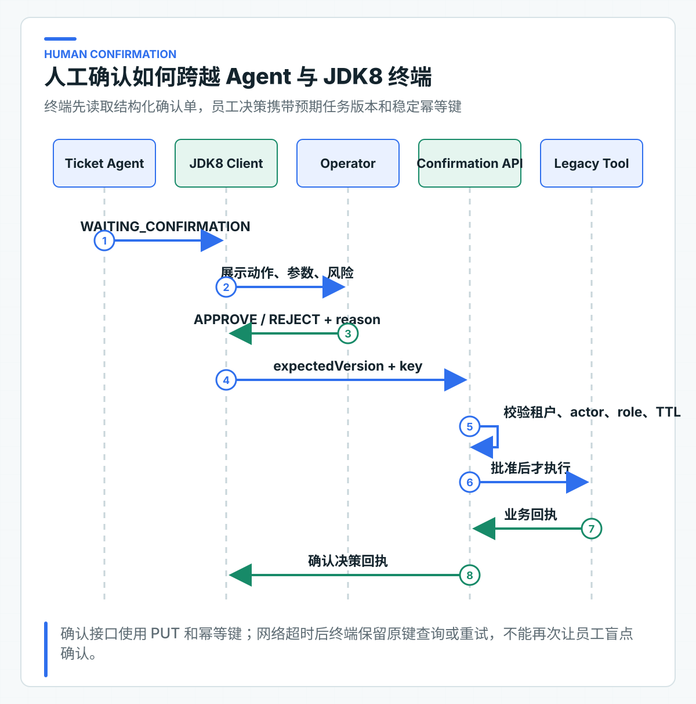
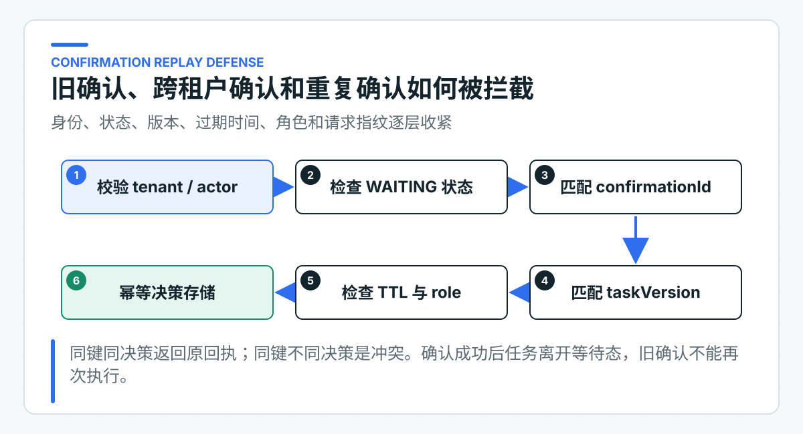

人工确认为什么不能只传一个字符串 token
很多 Agent Demo 会返回一个 confirmationToken。前端把它显示成确认按钮，员工点击后原样传回，后端随即执行工具。问题是，这个字符串没有告诉确认人当前金额、工单和风险，也无法证明执行参数和页面展示时保持一致。
项目把一次人工决定建模为结构化确认单，记录任务版本、工具、规范化参数、风险、所需角色、过期时间和确认人。重复提交同一决定时，服务端还要返回同一结果。
确认单由 Ticket Agent 生成，通过 OpenAPI 交给 JDK8 CRM 展示。配套项目提供 Java 8 客户端和协议测试，没有实现公司的 CRM 页面。接入后，员工提交 confirmationId、expectedTaskVersion、原因和稳定的 Idempotency-Key；服务端重新验证这些绑定，批准后才执行写 Tool。
一个字符串无法表达动作事实
假设接口只返回：
{
"confirmationToken": "abc123"
}
前端无法知道 token 是否绑定金额、币种、工单、租户和过期时间。若后端只按 token 查一条缓存记录，还会出现这些问题：
- 模型在确认页面打开后重新规划，参数已经变化；
- 员工确认旧版本任务，覆盖了其他人的处理；
- token 被复制到另一个租户或任务请求；
- 重复点击触发两次远程写；
- token 过期后仍可执行；
- 确认人不具备当前动作要求的角色；
- 前端展示 A，后端执行缓存中已经变成 B 的动作。
一个随机字符串可以作为不可猜测 ID，但不能替代这些业务绑定。真正的安全来自服务端记录和逐项校验，而不是 token 看起来足够长。
确认单保存完整动作快照
配套 ConfirmationRequest 包含：
confirmationId
actionId
toolName
risk
requiredRole
arguments
fingerprint
boundTaskVersion
expiresAt
confirmationId 定位当前确认单，actionId 标识最终业务动作。两者分开有实际价值：确认单可能因为过期或任务变化重新生成，但业务动作若发生变化应拥有新 actionId；下游幂等和审计更适合绑定 actionId。
arguments 是经过 Tool Catalog 规范化的参数，不是模型原始 JSON。fingerprint 对工具名和按名称排序的参数做 SHA-256。员工提交决定时，服务端会从确认单快照重算指纹；参数或工具名被改动后，请求会在调用老系统之前被拒绝。
boundTaskVersion 防止过时确认。创建确认单时，它绑定任务进入 WAITING_CONFIRMATION 后的版本。员工提交决策时，命令中的 expectedTaskVersion 必须同时等于当前 task version 和 confirmation bound version。
expiresAt 限制确认有效期。高风险动作不应在数小时后仍使用旧政策、旧订单状态和旧权限直接执行。过期后应重新加载事实并生成新确认。
页面展示确认人需要判断的信息
确认页面不是聊天消息旁边的“同意”按钮。至少应展示：
- 任务与业务对象，例如工单号、订单号；
- 动作类型和规范化参数；
- 风险等级与可能影响；
- 当前业务状态；
- 支持该建议的政策条款或查询结果；
- 所需角色；
- 确认有效期；
- 拒绝入口和原因。
页面不应允许确认人在原表单里随意修改参数后继续提交同一个 confirmationId。若允许编辑，就必须把修改建模为新动作，重新进行业务校验、风险计算和确认绑定。
员工看到的显示值要来自确认单 DTO 和受信业务查询，不要从模型 rationale 中解析金额或订单号。rationale 可以辅助理解，但不能成为执行参数。
JDK8 终端只负责展示与提交决定

JDK8 CRM 通过 TicketAgentClient 查询任务。客户端只理解 OpenAPI 中的 AgentTaskView 和 ConfirmationView。它不依赖 Spring AI、Java 21 record 或 Ticket Agent 内部领域对象。
员工决定后，客户端提交：
{
"confirmationId": "confirmation-100",
"expectedTaskVersion": 3,
"decision": "APPROVE",
"reason": "订单与金额已核对，符合退款审批规则"
}
Idempotency-Key 放在 HTTP Header，不放在 body：
String idempotencyKey = TicketAgentClient.confirmationIdempotencyKey(
taskId, confirmationId);
Idempotency-Key: confirm:v1:<64 位 SHA-256 摘要>
客户端用带长度前缀的 taskId 与 confirmationId 生成摘要。Key 本身不包含员工身份，也不会把任务和确认单标识直接暴露到网关日志；即使 ID 中包含冒号，字段边界也不会混淆。Header 表达当前 HTTP 业务操作的重试身份，body 表达员工决策。调用超时后仍使用原 Key，不能生成新 Key 再确认一次。
服务端重新验证确认人
ToolConfirmationService 按以下顺序验证：
- 任务存在；
- actor tenant 与任务 tenant 相同；
- actor 必须是
jdk8-crm； - 任务状态必须是
WAITING_CONFIRMATION； - confirmationId 与待确认动作一致；
- 工具名与参数重算后的指纹与快照一致；
- 当前 task version 和 bound version 都等于 expected version；
- 确认尚未过期；
- 确认人 roles 包含 requiredRole。
任一条件失败都不能调用下游 Tool。tenant、actor、subject 和 roles 由 Ticket Agent 校验 JWT 后构造 ConfirmationActor，不接受请求体声明。
只在前端隐藏按钮不够。攻击者可以直接调用 API，旧客户端也可能缓存错误角色。服务端授权必须独立成立。
任务版本阻止旧页面覆盖新状态
员工 A 和员工 B 同时打开 task-100，都看到 version=3。A 先批准，任务进入 EXECUTING 并更新到 version=4。B 随后提交 expectedTaskVersion=3，服务端必须返回冲突，不能再次执行。
如果没有版本绑定，只检查 confirmationId，B 的请求可能在 A 执行后重复到达。即使下游有幂等，确认审计也会出现两个批准人，界面无法解释谁的决策生效。
乐观版本适合低冲突人工处理，不需要长时间持有数据库锁。生产数据库更新可以使用：
update agent_task
set state = 'EXECUTING', version = version + 1
where task_id = :taskId
and state = 'WAITING_CONFIRMATION'
and version = :expectedVersion;
影响行数为 0 时，重新读取任务并返回稳定 409。不要先查状态再无条件 update，否则两个并发请求都可能通过检查。
确认决定按业务请求幂等
员工点击批准后，网络响应丢失。客户端无法知道服务端是否已经接受决策。如果自动重试，服务端应返回第一次的决策回执，而不是重新执行。
当前 ConfirmationDecisionStore 以以下范围组成幂等命名空间：
tenantId + actorId + subjectId
同一个 Idempotency-Key 还保存请求指纹，指纹包含 taskId、confirmationId、expectedTaskVersion、decision 和 reason。规则为：
身份作用域和请求指纹都不用换行符直接拼接。每个字段先写长度，再写字段值，最后计算 SHA-256。这样即使 reason 或外部身份包含换行，也不会与另一组字段形成相同的幂等范围或请求指纹。
| Key | 指纹 | 处理 |
|---|---|---|
| 首次 | A | 执行决策并保存回执 |
| 已存在 | A | 返回原回执，duplicate=true |
| 已存在 | B | 返回幂等冲突 |
把 tenant、actor 和 subject 纳入命名空间，避免不同员工或终端错误复用同一 Key 时互相命中。生产实现应在数据库中使用唯一约束，并与确认状态更新放进清晰事务边界。
身份、版本和过期时间阻止重放

重放防御不是只靠幂等键。幂等键解决重复 HTTP 意图，状态和版本解决旧确认，TTL 解决长期凭证，角色解决越权，confirmationId 和指纹解决动作替换。
一个旧批准请求即使使用不同 Idempotency-Key，任务也已经离开 WAITING_CONFIRMATION，因此会被状态机拒绝。一个跨租户请求即使猜到 confirmationId，也会被 tenant 校验拒绝。一个普通操作员即使拿到高风险确认单，也会缺少 REFUND_APPROVER。
不要把 confirmationId 设计成长期可执行的 bearer secret。它只是确认单标识，真正授权来自当前受信 JWT 和服务端状态。
APPROVE 与 REJECT 分别改变什么
REJECT 表示员工明确不同意当前动作。服务端把任务改为 REJECTED，记录原因和审计，不调用 Legacy Tool。拒绝原因应有结构化原因码或受控选项，必要时允许补充说明，方便后续分析模型是否选错工具、参数是否错误或政策是否不清。
APPROVE 只表示允许尝试执行，不代表最终成功。服务端先把任务改成 EXECUTING，再调用老系统。老系统仍可能因为订单状态变化、金额限制或重复业务动作返回拒绝。
确认决策回执因此同时包含 task state、actionId、toolStatus、auditId、taskVersion 和 duplicate。界面根据这些字段显示确定结果，不能只看 HTTP 200 就写“退款成功”。
确认接口返回可处理的错误
常见结果应稳定映射：
- 400：确认参数不合法、confirmationId 不匹配；
- 401：Token 缺失、无效或过期；
- 403：跨租户、错误 actor 或缺少角色；
- 404：任务不存在；
- 409：任务状态、版本、过期或幂等冲突；
- 503：下游或配置不可用且当前没有确定业务结果。
对写请求，客户端不能对所有 503 和网络超时自动生成新动作。确定拒绝可以按规则重试，结果未知则必须查询原动作状态。
直接观察首次批准与重复提交
启动 Ticket Agent 后，打开阶段 05 的 agent-learning-journey.http。
第 03 个请求把同一任务推进到 WAITING_CONFIRMATION，并自动保存 confirmationId 和绑定版本。第 06 个请求提交 APPROVE。第 07 个请求使用相同的 body 和 Idempotency-Key 再提交一次。
第一次回执的 duplicate=false，第二次为 duplicate=true，两次 actionId 必须相同。脚本会自动替换占位符，也能避免把审计事件名 CONFIRMATION_APPROVED 误写成接口枚举。
确认协议必须拒绝重放与越权
仓库回归会组合确认绑定、动作指纹、角色、过期、并发版本和幂等冲突，确认任何一项不一致都会在调用老系统前被拒绝。Java 8 客户端的字节码兼容性由独立模块检查，准确构建入口留在模块 README 和 CI。
进入生产前补齐确认基础设施
确认单和决策记录在公司环境必须持久化，进程内 Map 只适合单进程本地联调和测试。将 java-ai.persistence.mode 改为 jdbc 后，JdbcConfirmationDecisionStore 会保存身份作用域、幂等键、请求指纹、执行占用和最终回执。远程 Tool 不在数据库事务里执行。
写动作的过期占用不能由下一次 HTTP 重试自动接管。旧执行可能已经到达远端，直接抢占会造成重复副作用。PENDING 决策统一返回“处理中”，即使占用时间已经超过阈值，也必须先用 actionId 和下游幂等记录完成对账，再由受控恢复流程写入最终状态。租约时间用于发现卡住执行，不是自动重复执行许可证。
高风险业务可能需要双人审批、岗位互斥、班次授权或金额分级。此时不要在一个 confirmation 上堆多个布尔字段，应该把审批建模为独立状态机，并让最终 Tool 只接受审批完成的 actionId。
确认页面还需要防跨站请求伪造（CSRF）、会话固定、越权读取和敏感信息泄露。Ticket Agent 服务端校验是底线，终端安全与员工身份认证同样属于完整链路。
人工确认不是系统失败后的临时补救，而是把参数明确、依据充分的动作交给合适岗位判断。批准后，本地任务状态和远程老系统写操作无法放进一个普通事务；请求超时时，系统必须保留结果未知状态并主动对账。